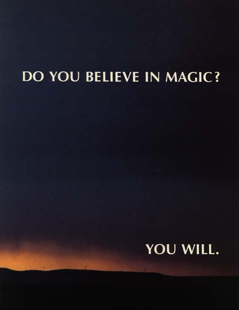

RDI Halcyon
The voice-controlled laserdisc game console that trained itself to your voice, cost $2,500, and sold perhaps ten units before vanishing into legend.

Overview
The RDI Halcyon was a voice-controlled laserdisc home video game console developed by RDI Video Systems, founded by Rick Dyer in Carlsbad, California. Demonstrated at CES in January 1985 and priced at $2,500 (approximately $7,400 in 2024 dollars), the Halcyon was an audacious attempt to bring conversational speech interaction to the living room. The system consisted of a Z80-based computer unit, a Pioneer laserdisc player, and a noise-canceling headset with microphone. The defining interaction model was voice: rather than joysticks or keyboards, players spoke commands aloud, and the Halcyon's speech recognition engine interpreted them in context to navigate branching full-motion video narratives and play games.
Before each session, users trained the Halcyon to recognize their voice by reading sample phrases — an early example of speaker-dependent speech recognition in a consumer device. During gameplay, the system would recognize commands like 'Halcyon, I choose to go left' or 'Halcyon, fire' and respond with synthesized speech confirmation. The Halcyon's AI persona — 'Halcyon' itself — was a synthesized voice that served as narrator, game master, and interactive companion, addressing the player by name. The launch titles included 'Thayer's Quest' (a fantasy adventure), 'The Land of the Dead' (a horror game), NFL Football, and an interactive version of the cartoon 'Heathcliff.'
Despite its technical ambition, the Halcyon was a spectacular commercial failure. RDI Video Systems had been funded largely by profits from Dyer's earlier hit, the laserdisc arcade game 'Dragon's Lair' (1983), but the Halcyon burned through those resources. The $2,500 price point, limited software library, unreliable speech recognition in noisy living rooms, and the 1983 video game crash's aftermath all contributed to its demise. Estimates of total production range from as few as 2 to perhaps 10-12 units, making it one of the rarest video game consoles ever produced. Today, surviving units are museum pieces, with examples at the National Videogame Museum in Frisco, Texas.
Deep dive
The Halcyon's most distinctive feature was that it was controlled almost entirely by voice. Players wore a lightweight headset with a noise-canceling microphone, and the system's speech recognition was the primary input — unusual even by today's standards. While some games supported a traditional joystick as a fallback (plugged into a 4-pin connector on the back of the keyboard unit), the intended experience was conversational. The voice recognition was speaker-dependent: before playing, users trained the system by repeating sample phrases, allowing the Halcyon to build a voice model. The system provided feedback by repeating recognized commands using its built-in speech synthesizer, giving users confirmation that their command had been understood. The speech recognition vocabulary was limited to game-specific command sets — 'go left,' 'go right,' 'open door,' 'use key' — but the interaction felt genuinely futuristic in 1985. However, recognition was notoriously unreliable, especially in environments with background noise or multiple speakers, a limitation that undermined the entire 'hands-free' promise.
Under the hood, the Halcyon was a hybrid system: a Z80A CPU running at 4 MHz with 64 KB of RAM and 8 KB of ROM handled voice recognition and game logic, while a Pioneer LD-700 or LD-V6000 series laserdisc player (purchased separately or bundled) provided full-motion video and CD-quality audio. The computer unit connected to the laserdisc player via RS-232 serial, sending seek commands to jump between video segments based on the player's spoken choices. This branch-on-choice approach created an 'interactive movie' experience years before the term existed — the laserdisc held a branching video tree, and the voice recognition selected which branch to play next. The system also included an external QWERTY membrane keyboard (for setup and text entry) and composite video output for connection to a television. Unlike contemporary game consoles that generated graphics in real time, the Halcyon was fundamentally a video playback controller with a voice interface grafted on top.
The Halcyon was born from the profits of one of the most successful arcade games of the early 1980s: 'Dragon's Lair' (1983), created by Rick Dyer and animated by Don Bluth. Dragon's Lair used laserdisc technology to deliver full-motion cartoon animation in an arcade cabinet, and it earned approximately $32 million in its first year. Dyer reportedly invested $20 million of those profits into developing the Halcyon, believing that laserdisc-based interactive entertainment was the future of home gaming. RDI Video Systems was established specifically to pursue this vision. But the home market was dramatically different from the arcade — consumers expected robust, reliable interaction, not the precise-timing joystick moves of Dragon's Lair — and the Halcyon's voice recognition couldn't match the reliability of a joystick. Dyer would later say of the project: 'We were too far ahead of the technology.'
Only two games are known to have been completed for the Halcyon: 'Thayer's Quest' (a high-fantasy adventure set in a kingdom called Weigard, with the player as the hero Thayer) and 'The Land of the Dead' (a horror game based on the 1968 film 'Night of the Living Dead'). Additionally, 'NFL Football' was demonstrated at CES as a Laserdisc-based sports title featuring John Madden providing commentary — with the player's spoken commands acting as the quarterback calling plays. An interactive version of the cartoon 'Heathcliff' was also shown. 'Thayer's Quest' was later ported to other platforms (CD-i, DVD, iOS), but the Halcyon originals were laserdisc-and-voice exclusives. The game design was constrained by the branching-video format: each spoken command triggered a seek to a specific frame on the laserdisc, which could take 1-3 seconds, creating noticeable pauses between command and response.
One of the most distinctive aspects of the Halcyon was its synthesized voice personality. The system addressed players by name (entered during setup) and adopted a conversational tone — 'Greetings, Sarah. I am Halcyon. What would you like to play?' — creating the impression of an intelligent companion rather than a mute game console. This was a deliberate design choice: Rick Dyer envisioned Halcyon as not just a game machine but a 'home companion' that could read bedtime stories, help with homework, and control other home electronics. The Halcyon's name itself was chosen to evoke calm and tranquility ('halcyon days'), positioning the device as a soothing, intelligent presence in the home — a precursor to smart speakers like Amazon Echo and Google Home by 30 years. The 1985 CES demonstration showed Halcyon reciting a poem, answering questions, and engaging in light banter with booth visitors.
The Halcyon was announced at CES in January 1985 with a planned retail launch for late 1985 at $2,500. But the timing was disastrous: the 1983 video game crash had gutted the home console market, retailers were gun-shy, and $2,500 was an astronomical price for a game console (a Nintendo Entertainment System would launch at $180 the same year). RDI Video Systems had poured an estimated $20 million into development but ran out of money before mass production could begin. Only a handful of units were ever built — estimates range from 2 to 12 — primarily for trade show demonstrations and investor pitches. The company folded shortly after. Surviving Halcyon units are among the holy grails of video game collecting. The National Videogame Museum in Frisco, Texas, holds a unit and sometimes displays it. A few units have surfaced at auction, with one selling for approximately $8,500. The Halcyon's laserdisc games were later repurposed: 'Thayer's Quest' was ported to the Philips CD-i in the 1990s, and Rick Dyer later worked on other interactive movie projects, though none achieved the Halcyon's audacious scope.
Team & pioneers
- Rick Dyer. Founder of RDI Video Systems. Creator of the arcade hit 'Dragon's Lair' (1983) with animator Don Bluth. Invested an estimated $20 million of Dragon's Lair profits into developing the Halcyon. Visionary behind the voice-controlled interactive home entertainment concept.
- RDI Video Systems. Carlsbad, California startup formed to commercialize laserdisc-based interactive entertainment. Funded primarily from Dragon's Lair arcade revenue. Demonstrated the Halcyon at CES 1985. Folded shortly after the Halcyon's commercial failure.
- Advanced Products and Technologies / APT. The company or division responsible for manufacturing the Halcyon hardware. Some sources reference APT as the manufacturing arm of RDI.
- Don Bluth. Animator who created the visuals for Dragon's Lair's follow-up content, some of which was planned for Halcyon.
Media

Sources
- Wikipedia: Halcyon (console)
- Polygon: 'The Story of the Halcyon, the Most Rare Console in History' (2018)
- AtariHQ: RDI Halcyon detailed history and photos
- Giant Bomb: Halcyon wiki entry
- The Dragon's Lair Project: Halcyon history
- Old-Computers.com: RDI Halcyon
- RDI Halcyon promotional brochure scans
- Video Game Console Library: Halcyon
- YouTube: Rare Halcyon Console Footage at CES 1985